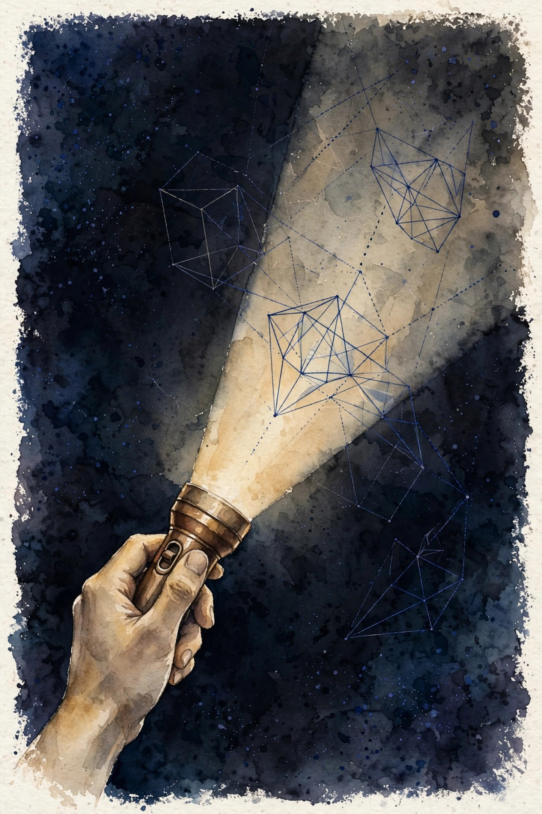
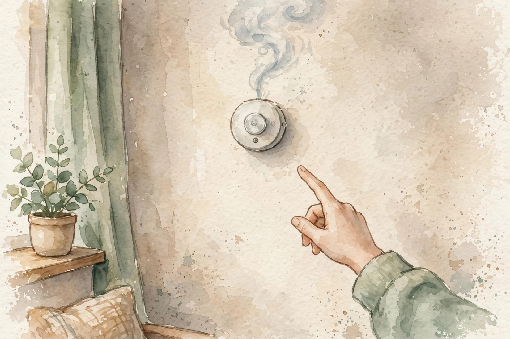

CS224N · Companion artifact U13 of 15
Two halves: how we look inside models (sections 1 to 6) and what the models do to the world (sections 7 to 12). The first half is science, the second is responsibility. Both need numbers.
“From the lesson” marks facts from lessons/u13_interpretability_impacts.md. “Illustration” marks interactive toys that run the lesson’s rules over tiny inputs. “Companion” marks advice from the companion author. Tags after each section name the lesson leaf, for example C04.

Section 1 · C01
From the lessonC01 §2, §3
Does the model have a "truth" direction? Concepts are directions in activation space. The probe is a flashlight: it finds the direction that separates your labeled examples. Finding it is not understanding it. The probe is logistic regression on activations. The mechanism is correlation.
From the lessonC01 §4, §5
Hand-set toy, labeled as such: collect activations for true vs false statements, fit a linear probe, accuracy 0.83 against baseline 0.50. The direction exists in the toy. Choose probes when you know what to look for. Choose unsupervised discovery (clustering, sparse autoencoders) when you do not.
From the lessonC01 §11
The broken assumption is that the probe found the concept. The probe may find a correlated proxy (sentence length, not truth). Probes find predictors, not meanings (C04). Control for the proxy (length-matched pairs) and re-run: accuracy should fall.
A probe finds what predicts your labels, not what the concept means. Control for the obvious proxy before you believe the direction.
Section 2 · C02
From the lessonC02 §2, §3
The model answers correctly. Does it "know" the rule? Behavior is the scoreboard, mechanism is the replay. The scoreboard tells you it works, the replay tells you why. You need both: behavior without mechanism is alchemy, mechanism without behavior is trivia.
From the lessonC02 §4, §5
Hand-set toy, labeled as such: 90 percent behavioral on the task, but the ablation (C03) shows the "rule" circuit is unused: the model uses a shortcut. The scoreboard lied about the how. Behavioral claims need behavioral tests (held-out, adversarial). Mechanistic claims need interventions.
From the lessonC02 §11
The broken assumption is that high accuracy means the right mechanism. Accuracy is not understanding.
The scoreboard can lie about the how. A shortcut gives the right answers through the wrong mechanism.
Section 3 · C03
From the lessonC03 §2, §3
The direction predicts the concept. Does it cause the behavior? Correlation is the suspect, intervention is the trial. Remove the component and watch the behavior. If nothing changes, the component was not the cause. Effect = metric(before) - metric(after).
From the lessonC03 §4, §5
From compute_u13.py: ablate the concept direction, the logit gap falls from 2.1 to 0.6, effect 1.5. The direction carried the concept. The gap mostly lived in that direction.
From the lessonC03 §11
The broken assumption is that no effect means no role. Backup circuits take over (redundancy). The test is one-sided: effect proves contribution, no effect proves little.
compute_u13.py (executed 2026-10-06): logit gap 2.1 before, 0.6 after. Effect 1.5.Remove the component, watch the behavior. The trial is one-sided: an effect proves contribution, silence proves little.
Illustration The intervention meter. The effect rule is C03’s. The gaps are yours. Prefilled with the lesson toy.
gap before
gap after
Section 4 · C04
From the lessonC04 §2, §3
The probe found a direction. What do you call it? The direction fires on "truth", but also on confident tone. "Truth direction" is a story, the activations are the fact. Our words are boxes, the model's concepts are clouds. Sometimes a cloud fits a box, often it does not. Naming the cloud after the box is the oldest error in the field.
From the lessonC04 §4, §5
Hand-set toy, labeled as such: 20 mismatches in 200: confident lies fire the "truth" direction. The label is wrong 10 percent of the time. The mismatch test: find inputs where the label says yes and the direction says no (and vice versa). The mismatches are the honest boundary of the label.
From the lessonC04 §11
The broken assumption is that the name is the concept. The map is not the territory.
Labels are hypotheses with mismatches shown. The firing set is the fact. The name is a story about it.
Section 5 · C05
From the lessonC05 §2, §3
You found the direction. Can you turn the knob? Steering is the intervention run in reverse: instead of removing the direction, you add it. h' = h + alpha times v. The model leans where you push. Push gently, measure the lean and the damage.
From the lessonC05 §4, §5
Hand-set toy, labeled as such: alpha = 2.0 moves the gap 1.5, perplexity rises 0.3. Alpha = 10 moves the gap 4.0, perplexity rises 5.0: the knob breaks the model past some point. The side effects grow with alpha.
From the lessonC05 §11
The broken assumption is that steering is clean. Every knob has a range: find it.
Push gently, measure the lean and the damage. The knob works until it breaks the model.
Illustration The steering knob. Interpolates between the lesson’s two anchor points (alpha 2.0 and 10). Labeled illustrative.
alpha
Section 6 · C06
From the lessonC06 §2, §3
After all this, what do you actually know? Attribution is a ladder: correlation, causation, control. Each rung is real, none reaches meaning. Climb honestly, stop where the evidence stops. Each rung's test gates the next claim.
From the lessonC06 §4, §5
Hand-set toy, labeled as such: the three numbers from C01, C03, C05 (0.83, 1.5, the knob). The honest summary: "a steerable correlate of truth-like text". You know a direction correlates, causes, and steers. You do not know what it "means".
From the lessonC06 §11
The broken assumption is that the ladder is complete. The backup-circuit case (C03): causation missed it. Ladders have gaps too.
Climb the ladder honestly and stop where the evidence stops. Claiming meaning past the evidence is hype.
Section 7 · C07
From the lessonC07 §2, §3
The model states a false fact fluently. What broke? The model predicts plausible text, not true text. Plausible and true overlap often, and that is the trap: the overlap teaches trust, the gap teaches harm.
From the lessonC07 §4, §5
Hand-set toy, labeled as such: 100 answers, 18 contain a false claim (fact-checked). Rate 0.18. With retrieval grounding: 7/100 = 0.07. Grounding helps, it does not solve. The mitigations: retrieval grounding (U09 C04), citations (U09 C08), uncertainty flags (C11).
From the lessonC07 §11
The broken assumption is that grounding fixes it. The 0.07 remainder says otherwise. Grounded models still err.
Section 8 · C08
From the lessonC08 §2, §3
The screen passes group A at 0.42 and group B at 0.28. Is that fair? The ratio is the smoke alarm. It does not prove discrimination, it demands an explanation. The explanation is either legitimate (different qualifications) or the model (fix it).
From the lessonC08 §4, §5
From compute_u13.py: 0.42, 0.28, 0.39, ratio min/max = 0.667. Far from 1.0 demands an explanation. The fixes: balance the data, constrain the model, change the threshold per group (each with trade-offs).
From the lessonC08 §11
The broken assumption is that the ratio proves bias. Different base rates with a perfect predictor give a low ratio too. The ratio is the alarm, not the verdict.

compute_u13.py (executed 2026-10-06): 0.42, 0.28, 0.39. Ratio 0.667.A ratio far from 1.0 demands an explanation. It is the alarm, not the verdict: explain or fix.
Illustration The alarm. The min/max rule is C08’s. The rates are yours. Prefilled with the lesson toy.
rates (comma separated)
Section 9 · C09
From the lessonC09 §2, §3
Can the model recite your data? Training data is not forgotten, it is compressed. Rare strings compress poorly and stick out. The model is a lossy archive with a search function.
From the lessonC09 §4, §5
From compute_u13.py: 200 canary strings planted in training, 37 extracted verbatim. Rate 0.185. Nearly one in five canaries leaks. The mechanism is the prompt: prefix the canary, the model completes it. Deduplication and differential privacy are the defenses.
From the lessonC09 §11
The broken assumption is that deduplication fixes it. The canary appears once and still extracts (rare + long = memorable). Dedup helps, it does not solve.
compute_u13.py (executed 2026-10-06): 37 of 200 extracted, rate 0.185.Memorization is real: nearly one in five planted canaries leaks. Assume the model remembers, then defend.
Section 10 · C10
From the lessonC10 §2, §3
The model can help with harm. What do you do? Capability is dual-use. The same model that debugs code helps break it. Red-teaming probes the boundary, it does not remove the capability. The mechanism is the matrix: harm classes vs tests, coverage per class.
From the lessonC10 §4, §5
From compute_u13.py: misinfo 6/8, bias 4/8, privacy 2/8, misuse 3/8. Thin coverage is the finding: the report leads with the thinnest. Privacy is the thinnest cover.
From the lessonC10 §11
The broken assumption is that the red team found everything. The next attacker is smarter. Coverage is a lower bound on safety, not a certificate.
compute_u13.py (executed 2026-10-06): 6/8, 4/8, 2/8, 3/8. Privacy is thinnest.Section 11 · C11
From the lessonC11 §2, §3
The model says 0.9. Should you believe 0.9? Confidence is a claim about accuracy. ECE audits the claim: mean absolute gap between stated and observed. An unaudited confidence is decoration.
From the lessonC11 §4, §5
From compute_u13.py: ECE 0.425. The model's 0.9s are right about half the time: no, do not believe 0.9. The mechanism is the binning: group by stated confidence, compare to observed rate.
From the lessonC11 §11
The broken assumption is that calibration transfers. The model is calibrated on quiz questions and wild on yours. Calibrate on your distribution.
Report ECE before any deployment claim. A 0.9 that means 0.5 is a lie the model tells fluently.
Illustration The ECE audit. Give (stated, observed) pairs, one per line. Prefilled to reproduce the lesson’s 0.425.
Section 12 · C12
From the lessonC12 §2, §3
The system ships. What did you check? The report is the receipt. It lists what was measured, what was found, what is absent. A system without a receipt is an experiment on the users.
From the lessonC12 §4, §5
From compute_u13.py: the checklist (data provenance, bias test, misuse eval, privacy review, uncertainty report, rollback plan) scores 4/6. Missing: misuse eval, uncertainty report. The 2 missing are the ship-blockers. Below 6/6, the missing items are named blockers.
From the lessonC12 §11
The broken assumption is that the report is done at 6/6. The world changes, the report ages. Revisit per release.
compute_u13.py (executed 2026-10-06): 4 of 6 done, misuse eval and uncertainty report missing.Ship the receipt with the system. What was measured, what was found, what is absent: the absent part blocks the ship.
Illustration The receipt printer. Check the items you completed and see the score.
Check the items you completed:
Wisdom index
Each nugget states the idea in plain words, why it matters, and the transferable principle. Every one is anchored to its lesson section.